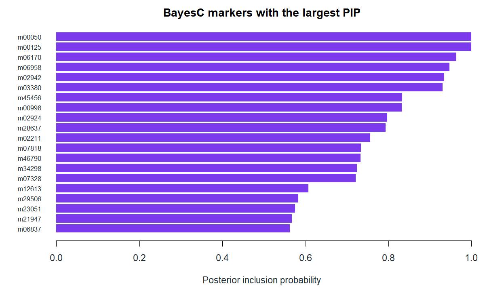

Bayesian genomic regression with gbayes
gbayes fits marker effects from aligned summary statistics and the shared Glist LD reference. It also supports individual BED phenotypes, multivariate fits, annotation-informed priors and several focused summary engines. This page interprets the BayesC fit from the 20K/50K simulation; alternative calls below show other available routes without attaching the displayed BayesC numbers to them. Load statistics, reference_Glist, Y and panel from the linked study overview and gbase preparation, or run the complete driver there to regenerate the saved fit.
Fit one summary trait
Trait A contributes 6,000 GWAS individuals. Its aligned table has effect estimates b, standard errors seb and sample size n for every marker. The fixed BayesC prior used in the saved run expects roughly 2% of markers to be active.
library(gbayes)
prior <- list(
residual_variance = 1,
effect_variance = 0.3 / (50000 * 0.02),
inclusion_probability = 0.02
)
control <- list(
burnin = 500L,
sampling_sweeps = 700L,
seeds = c(11, 29, 47, 71),
threads = 4,
residual_policy = "fixed"
)
fit <- gbayes(statistics$A, reference_Glist,
method = "bayesc", trait = "A",
prior = prior, control = control)The fit returns one row per marker in fit$estimates, a portable allele-labelled fit$weights table, posterior parameter summaries and chain diagnostics. These are the saved parameter summaries:
| Parameter | Mean | Sd | Lower | Upper | R-hat | ESS bulk |
|---|---|---|---|---|---|---|
| residual_variance | 1 | 0 | 1 | 1 | ||
| effect_variance | 3.000e-04 | 0 | 3.000e-04 | 3.000e-04 | ||
| active_markers | 988 | 30.6 | 929 | 1,048 | 1 | 2775 |
| weight_0 | 0.98 | 0 | 0.98 | 0.98 | ||
| weight_1 | 0.02 | 0 | 0.02 | 0.02 |
Residual variance, effect variance and the mixture weights were fixed here, so their posterior standard deviations are zero and R-hat/ESS are blank. active_markers was sampled; its R-hat and bulk ESS are meaningful chain checks. Inspect the complete diagnostics and chain traces before treating a fit as stable:
fit$posterior
fit$diagnostics
fit$chainsInterpret marker support
mean is the posterior mean effect and pip is the posterior inclusion probability. PIP measures support for a nonzero effect under this model and prior; it is neither a GWAS p-value nor proof that one LD-correlated marker is the unique causal variant.
| Marker | Position | Mean | Variance | PIP |
|---|---|---|---|---|
| m00050 | 50,000 | 0.131 | 1.033e-04 | 1 |
| m00125 | 25,000 | 0.139 | 1.082e-04 | 1 |
| m06170 | 70,000 | 0.0395 | 1.627e-04 | 0.964 |
| m06958 | 58,000 | -0.0378 | 1.844e-04 | 0.948 |
| m02942 | 42,000 | -0.0371 | 1.949e-04 | 0.935 |
| m03380 | 80,000 | -0.0362 | 2.035e-04 | 0.93 |
| m45456 | 56,000 | -0.0312 | 2.867e-04 | 0.833 |
| m00998 | 98,000 | 0.0298 | 2.657e-04 | 0.832 |
| m02924 | 24,000 | 0.0281 | 2.866e-04 | 0.797 |
| m28637 | 37,000 | 0.0276 | 2.855e-04 | 0.794 |

top <- fit$estimates[order(fit$estimates$pip, decreasing = TRUE), ]
head(top[c("marker", "position", "mean", "variance", "pip")], 10)
head(fit$weights)The weights table includes marker IDs, coordinates, alleles, allele frequencies and standardized-effect columns. gscore checks these labels against a target Glist and applies the weights to held-out people.
Choose the model and data route
| Route | Example call | When it is useful |
|---|---|---|
| Summary BayesR | gbayes(statistics$A, reference_Glist, method = "bayesr", prior = bayesr_prior) |
Mixture of several nonzero effect scales. |
| Annotation-informed eigen blocks | gbayes(statistics$A, reference_Glist, method = "sbayesrc", annotation = component_annotation) |
Verified independent LD blocks and marker annotations. |
| Individual-level BayesC/R | gbayes(data = phenotype_table, Glist = panel, method = "bayesc", trait = "A", prior = prior) |
Fit directly to selected BED genotypes and named phenotypes. |
| Focused summary approximations | gbayes(statistics$A, reference_Glist, method = "variational") |
Deterministic variational or shrinkage analyses with their own controls. |
| One regional effect | gbayes_single_effect(region_stat) |
Posterior assignment probabilities under a one-effect model. |
For individual-level fitting, supply a data frame with unique character id and a finite pre-adjusted phenotype column:
phenotype_table <- data.frame(id = rownames(Y), A = Y[, "A"])
bed_fit <- gbayes(data = phenotype_table, Glist = panel,
method = "bayesc", trait = "A", prior = prior)sbayesrc requires the verified block partition from gbase::define_ld_blocks() and a marker-aligned component annotation. Block eigensystems are prepared once per fit and reused by its chains. The Bayesian workflow guide gives the full annotation structure and describes BayesR, BayesS scaling, multivariate traits, study-specific references and method-specific approximation controls.
Continue or request posterior quantities
Long chains can resume from an exact saved continuation state when the model definition and marker order are unchanged. posterior can request genetic covariance/correlation from a declared LD reference, heritability with an explicit phenotype variance, marker partitions or predictions for selected individuals with posterior uncertainty.
fit_with_quantities <- gbayes(statistics$A, reference_Glist,
method = "bayesc", trait = "A", prior = prior, control = control,
posterior = list(reference = reference_Glist,
phenotype_variance = c(A = 1)))
fit_with_quantities$quantitiesThose quantities are separate from the fixed BayesC run displayed above; use the phenotype variance of your actual trait rather than the illustrative value in the snippet.
Download posterior summaries · download the top marker estimates